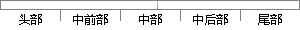

Mel频率倒谱系数是用一个在低频区域交叉重叠的三角形滤波器组-Mel滤波器组对语音信号的能量谱进行带通滤波。
片段位置图

相似结果|
相似片段 1：)对语音信号频谱幅度进行平方运算得到能量谱，在频域将能量谱通过一组三角滤波器进行带通滤波，这组带通滤波器的中心频率是按Mel频率刻度等距离排列的，每个21三角形滤波器的中心频率的两个底点的频率分别等于
|
※ 片段修改建议 ※
近似词参考：- 区域：地区
- 交叉：交织
- 重叠：堆叠
- 信号：旌旗灯号
- 进行：举行
系统自动生成语句：Mel频率倒谱系数是用一个在低频地区交织堆叠的三角形滤波器组-Mel滤波器组对语音旌旗灯号的能量谱举行带通滤波。
注：本片段修改建议为系统自动生成，仅供参考。